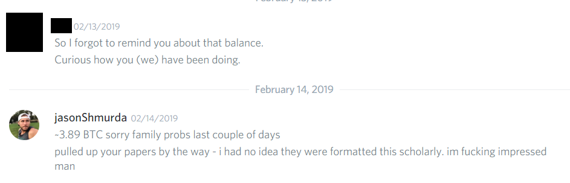
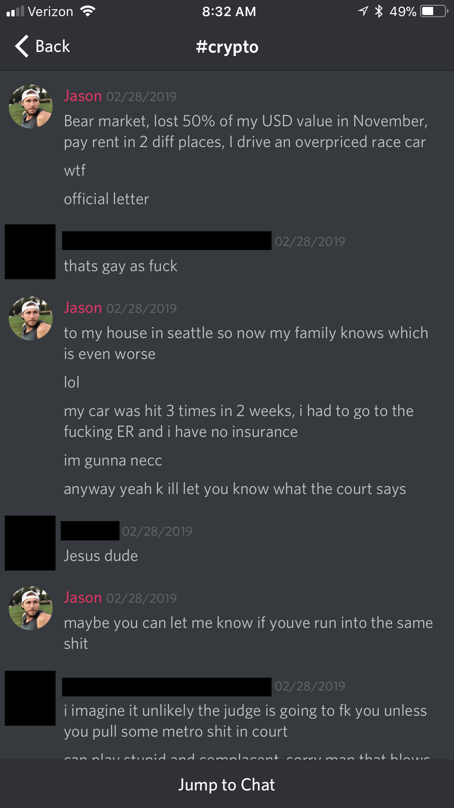
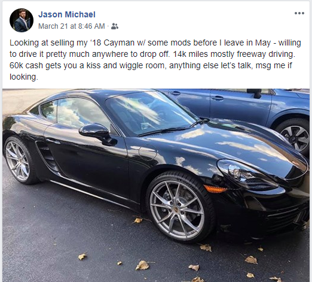
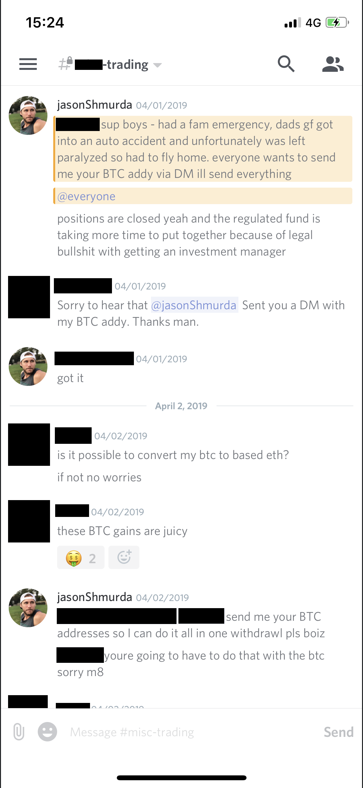
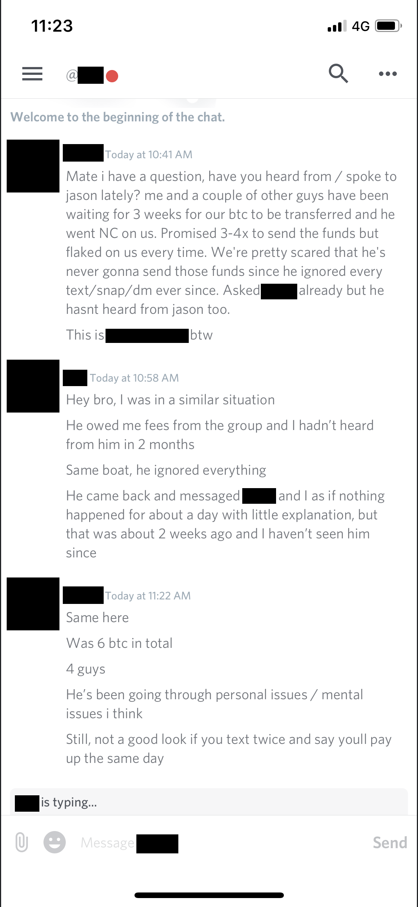
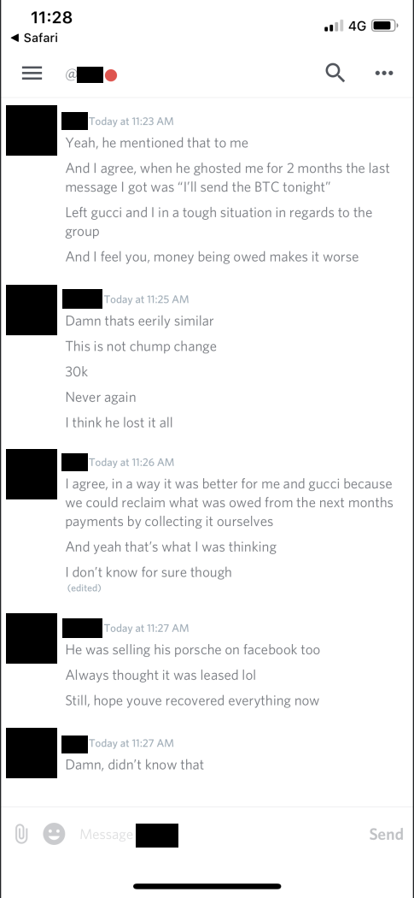
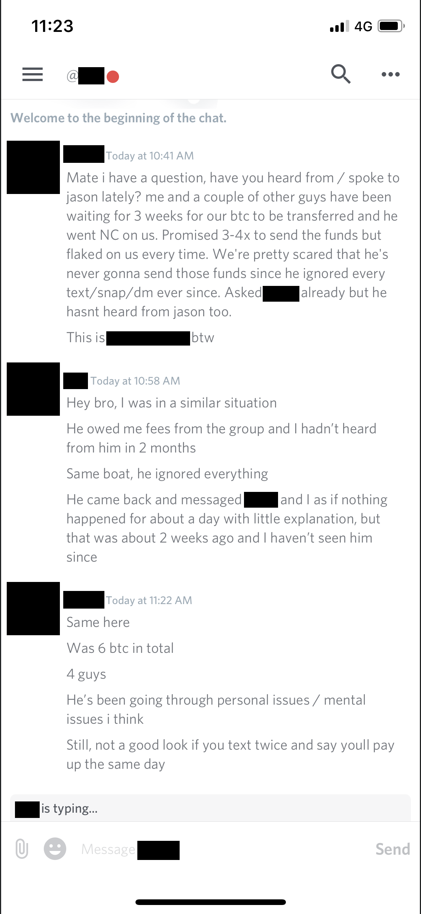
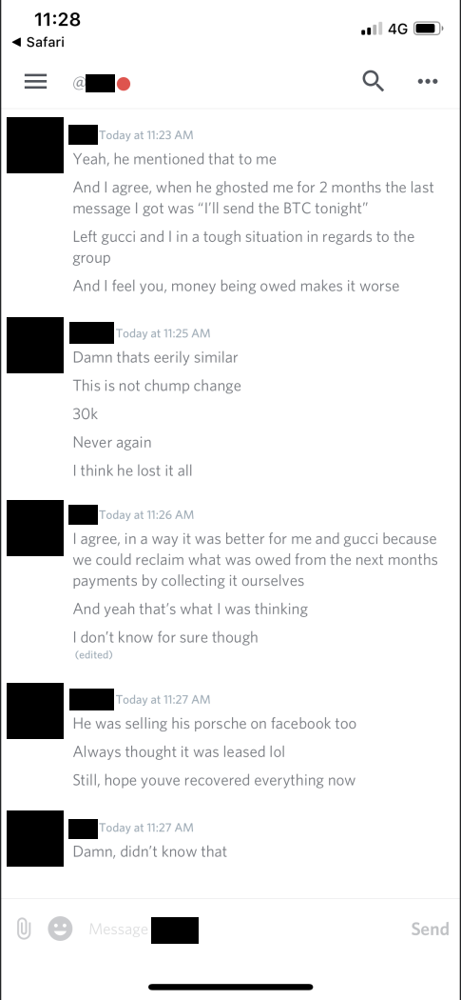

Jason Sivich Exposed
During Q3 2018 Jason Sivich collected 10+ BTC from a group of investors for a cryptocurrency fund. On March 31, 2019, he announced he was closing the fund and paying back investors. He has failed to pay back any money (totaling over $65,000 at the time of this writing) and has stopped communication with investors. We believe there may be more victims, please contact us at jasonsivichcase@protonmail.com with any additional information.
Mid-February - Jason stops updating the tracker spreadsheet used by the group and reverts to informal notifications, but only when pressed.  Late February 2019 - Jason reveals he has had some personal troubles and is low on cash  March 2019 - Selling his Porsche and planning to leave to Brazil afterwards  April 1st, 2019 - Jason supposedly collects BTC addresses to distribute funds. No indication of how much is in the fund, and the spreadsheet remained unupdated  Late May 2019 - Jason finally responds to a message after two months of trying to reach him. He claims funds will be distributed in June. June 2019 - After Jason failed to deliver the refunds, we contacted an admin from his paid group. Unsurprisingly, he cut communication with them after failing to distribute fees.


June 2019 - After Jason failed to deliver the refunds, we contacted an admin from his paid group. Unsurprisingly, he cut communication with them after failing to distribute fees.

